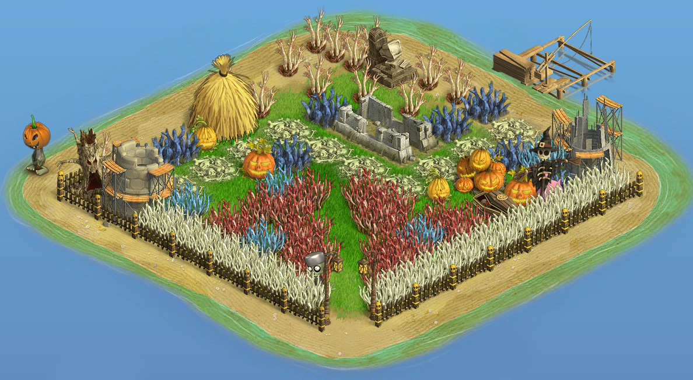

Получено: файл; исходный URL. Скриншот локации; оригинал 1188×652 px.


Ужасный остров
Браузерная социальная версия; историческая статья, дата редакции неизвестна- Тип
- Острова
- Версия и дата
- Браузерная социальная версия; историческая статья, дата редакции неизвестна
Данные по источнику · Браузерная социальная версия · историческая статья, дата редакции неизвестна
Предварительно: один материал ЗомбиСити / зеркало; требует сверки. Требуется сверка.
- Ресурсы (источник)
- Заколдованные дубы Заколдованные ели заколдованная секвойя
- Описание и доступ (исторический источник)
- Чтобы попасть на Ужасный остров, нужно сперва достроить пристань, которая находится на острове Пик Админа и пройти задание "Ужасный остров". Не вырубайте ресурсы на острове до того как он расколдуется. На острове вы найдете недостроенную пристань, которая ведет в Город-призрак. На Ужасный остров можно попасть по квесту: Ужасный остров На Ужасный остров можно попасть через пристань на острове Пик Админа: Пик Админа Пристань Ужасный остров Через пристань на Ужасном острове можно попасть в Город-призрак: Ужасный остров Пристань Город-призрак
- Пристань: стадия 1 (источник)
- 100 Бамбук + 48 Светляки + 50 Доска; 50 опыта.
- Пристань: стадия 2 (источник)
- 15 Канаты + 15 Компас + 15 Флюгер; 300 опыта.
Данные по источнику · браузерная социальная версия; платформа по источнику или не уточнена · 11.01.2014 — дата публикации копии
Предварительно: Текст совпадает с зеркалом moy.su, графика Zombicity; источник следует считать связанной копией, не независимым подтверждением.. Требуется сверка.
- Доступ
- Нужно достроить пристань на Пике Админа и пройти квест «Ужасный остров». На острове есть недостроенная пристань в Город-призрак. Автор советует не вырубать ресурсы до расколдования.
- Ресурсы и постройки
- Заколдованные дубы, «заколдованные если» (вероятная опечатка: ели), заколдованная секвойя; чёртовы брёвна и секвойя; Ужасный склеп, маяк и мельница.
- Пристань с Пика Админа
- 1: 100 бамбука, 48 светляков, 50 досок, 50 опыта. 2: 15 канатов, 15 компасов, 15 флюгеров, 300 опыта.
Данные по источнику · браузерная «Зомби Ферма» / «Зомби Мания»; платформа не уточнена · снимок каталога 10.12.2019; дата редакции неизвестна
Предварительно: Фанатский каталог; возможны общие картинки для разных локаций и зависимость от других источников.. Требуется сверка.
- Каталог
- В разделе «Домашние Острова Зомби Фермы» указана локация «Ужасный остров».
- Оговорка
- Каталог показывает название, картинку и ссылку; отдельная статья по этой ссылке не прочитана в рамках этого импорта. Условия доступа и версии требуют проверки.
- Сравнение снимков
- Эта же подпись, раздел и адрес картинки присутствуют в снимке того же каталога 14.09.2018; это не независимое подтверждение.
Связанные сущности
- Город-призрак — переход через пристань по ZombieLend